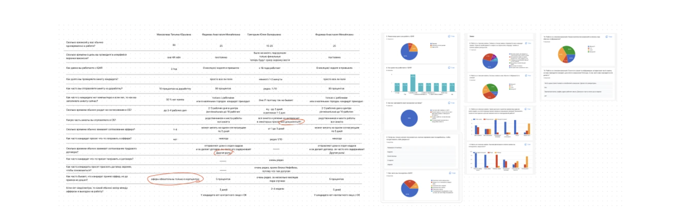
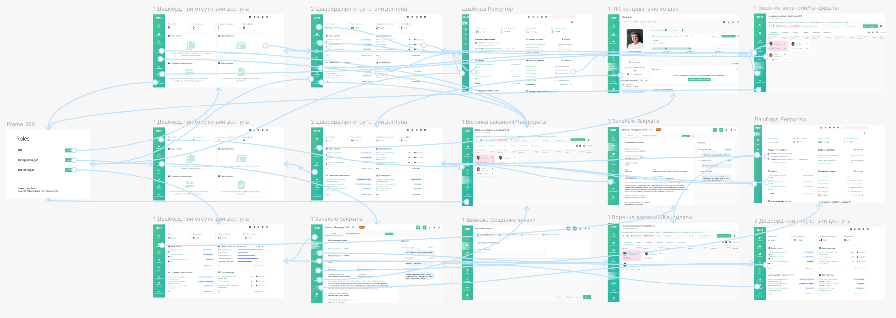

Редизайн дашборда
Настраиваемый дашборд для корпоративной HR-платформы, спроектированный как общая основа для нескольких ролей пользователей. Цель: дать каждой роли полезное дефолтное представление с первого дня, удержав при этом инженерные затраты на MVP на минимуме.
Постановка проблемы
Создание дашборда для групп пользователей в рамках MVP-прототипа — спроектировать общую часть дашборда, которую смогут использовать все группы пользователей.
Было несколько групп пользователей с разными флоу и разными правами доступа к данным, и мы хотели спроектировать дашборд для каждой группы. Чтобы сократить инженерные затраты на MVP, мы поставили цель выделить общие части дашборда, которыми могли бы пользоваться все группы, и закодить эти части в первую очередь.
На этом проекте у меня была прямая коммуникация с конечными пользователями из двух компаний. Однако все встречи были онлайн, а полевое исследование было невозможно, поэтому я начала с проведения глубинных видеоинтервью.
Я просила пользователей описать весь их рабочий день: какие действия в интерфейсе они делают чаще всего, какая информация важна для планирования дня, какая статистика им обычно нужна и с какими трудностями они регулярно сталкиваются.
Я проанализировала информацию и подготовила несколько предложенных отчётов для дашборда, а затем провалидировала эти отчёты с пользователями через опрос.

Прототипирование и оценка
Самые частые функции я выложила в lo-fi прототипе, который представила Product Owner и разработчикам, чтобы обсудить реализацию и получить оценки по трудозатратам и стоимости. Исследование дало нам точную картину самых частых функций по всем ролям; мы приоритизировали для кодинга самые ценные, а менее ценные оставили в бэклоге для будущих исследований.

Пользовательское тестирование
После обсуждения с командой я представила и протестировала финальный прототип с конечными пользователями и по итогам тестирования внесла улучшения перед финальной версией.
Следующие шаги
Собрать обратную связь через опрос и заняться остальными фичами из бэклога. Исследование подсветило дополнительные проблемы в других частях приложения, которым нужно внимание — и которые могут даже повлиять на дизайн дашборда.
Попробуйте прототип дашборда
Нативная пересборка дашборда. Переключайте роли вверху — руководитель рекрутинга, рекрутер, нанимающий менеджер — чтобы увидеть, как адаптируются виджеты.